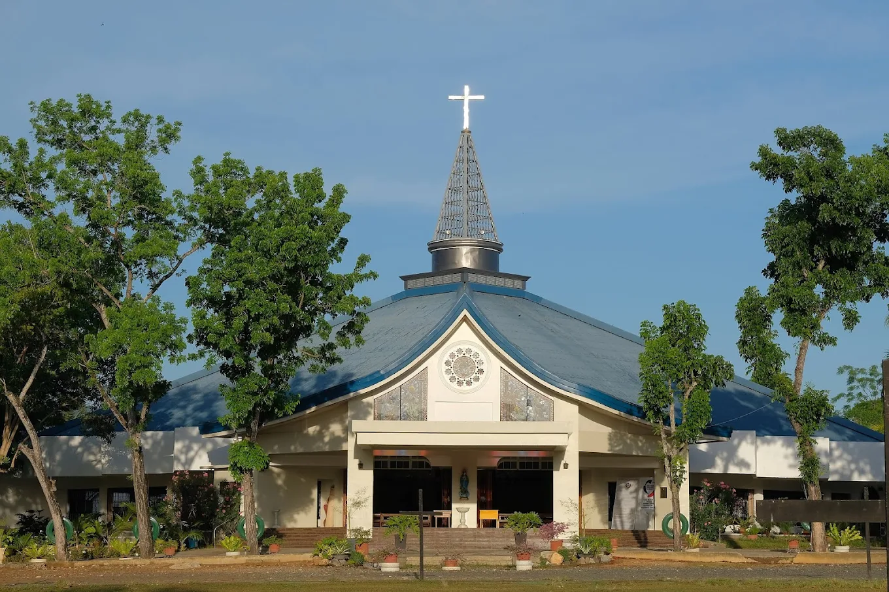
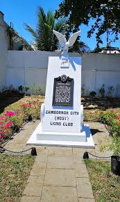

Overview
Dark tourism involves visiting sites associated with death, tragedy, or historical conflict. Rather than being morbid, it serves as a way to honor victims, understand historical struggles, and promote a culture of peace and remembrance.
In Zamboanga Sibugay, dark tourism allows visitors to reflect on the province's journey toward stability and witness the incredible resilience of its people.
Historical Landmarks of Remembrance
Ipil Massacre Memorial (Ipil)

The Ipil Massacre Memorial stands in the heart of the capital as a solemn tribute to the lives lost during the 1995 attack. It is a site of deep reflection where locals and visitors gather every April 4th to remember the tragedy and celebrate the town's remarkable recovery and its standing today as a "City of Peace."
Cathedral of Saint Joseph the Worker

As one of the focal points during the historical conflicts in the 90s, the Cathedral of Saint Joseph the Worker serves as a symbol of sanctuary and spiritual resilience. Visiting the cathedral offers insights into how faith and community leadership helped rebuild the province’s social fabric following periods of unrest.
Veterans Memorial Sites

Throughout various municipalities, smaller monuments dedicated to local heroes and veterans remind visitors of the sacrifices made to protect the province. These sites provide a historical narrative of Zamboanga Sibugay’s role in regional defense and its transition into a thriving, peaceful agricultural hub.